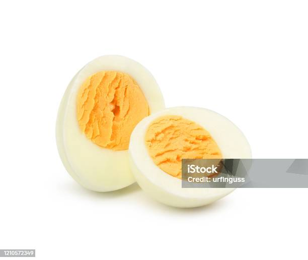

Boiled Egg

Less is more (it's not, more is more)
Boiled egg, the unsong hero of busy daily life for millions of people.
This humble meal rarely gets praised despite its high protein content,
eggellent shell-life (see what I did there?) and taste that
satisfies the most.
Boiled egg is truly a blessing to humanity. Now if only someone figured out
how to peel those damn things without ripping out half of the boiled egg with
the shell pieces. Seriously sometimes it feels like the position of the moon
affects the peeling process more than any tips in some silly online recipe.
But without further ado, let's get on with this online recipe on how to
cook a boiled egg!
Ingredients
- An egg (add more based on hunger level)
- Water
Steps
- Add water to a pot and heat up the water until it starts to boil
-
Add egg (or eggs) into the pot. Use a spoon to lower the egg
slowly into the pot. This reduces the chance of the egg
breaking immediately.
-
Depenging on your preference let it cook for:
- 6-7min (runny yolk)
- 8-9min (soft yolk)
- 10-12min (hard-boiled egg)
-
Remove the eggs from the water and immediately put them into cold water
and let the eggs cool down. Ice bath is even better I hear but I've never
bothered with that.
- Pray to the god(s) of your choice and the egg peeling spirits
- Peel the egg(s)
-
For extra fancy occations you may add some salt on top of
the eggs to intensify the flavors